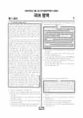

문제지

전국연합학력평가 · 시·도교육청 주관
2026년 5월 고3 학력평가 국어 1등급컷은 원점수 94점(비공식), 표준점수 최고점은 135점입니다.
원점수 1등급컷은 공식 발표값이 아니라 EBSi·입시기관 값입니다. 등급별 값은 등급컷 표, 출처 구분은 데이터 원칙에 있습니다.

시험지를 먼저 풀어 보세요. 등급컷·표준점수·난이도는 흐리게 가려 뒀어요.
| 등급 | 원점수 | 표준점수 | 백분위 |
|---|---|---|---|
| 1 | 94 | 130 | 96 |
| 2 | 88 | 125 | 89 |
| 3 | 80 | 118 | 77 |
| 4 | 69 | 109 | 60 |
| 5 | 54 | 96 | 39 |
| 6 | 36 | 81 | 22 |
| 7 | 22 | 71 | 11 |
| 8 | 16 | 66 | 4 |
등급별 컷 · 원점수는 EBSi·입시기관 값(비공식) · 만점 100점
| 등급 | 표준점수 이상 | 인원(명) | 비율 |
|---|---|---|---|
| 1 | 130 | 13,151 | 4.26% |
| 2 | 125 | 21,734 | 7.04% |
| 3 | 118 | 36,989 | 11.99% |
| 4 | 109 | 51,869 | 16.81% |
| 5 | 96 | 64,472 | 20.89% |
| 6 | 81 | 52,121 | 16.89% |
| 7 | 71 | 35,617 | 11.54% |
| 8 | 66 | 23,057 | 7.47% |
| 9 | 51 | 9,570 | 3.1% |
시·도교육청 공개 자료
출처: 시·도교육청이 공개한 전국연합학력평가 성적 분석·통계자료(공개 자료 보기).
발행 기관: 시·도교육청(전국연합학력평가). 파일 위치: 이 사이트가 보관한 사본. 저작권은 발행 기관에 있습니다. 원본과 다르거나 게시 중단이 필요하면 연락처로 알려 주세요. 등급컷 출처 구분은 데이터 원칙에서 설명합니다.
독서는 글 속 개념 사이의 이항 대립 구조를 분석하며 읽는 방법을 다룬 독서론(1~3번), (가) 세계를 객관적 실재로 보고 명제의 참·거짓을 사실과의 대응으로 판단한 러셀과 (나) 세계를 이질적인 언어 게임이 공존하는 장으로 본 리오타르를 묶은 주제 통합형 인문 지문(4~9번), 볼록 렌즈의 수차 가운데 비점 수차를 다룬 기술 지문(10~13번), 집합건물법의 구분소유권과 공용 부분을 다룬 법 지문(14~17번)으로 구성되었습니다.
공통과목에서 오답률 50%를 넘은 문항은 11번(3점, 58.8%) 하나로, 비점 수차가 발생한 상황을 그림으로 나타낸 <보기>를 지문의 원리로 이해하는 문항이었습니다.
문학은 이동하의 소설 「모래」(18~21번), 윤동주 「흐르는 거리」·고정희 「따뜻한 동행」과 남유용의 한문 수필 「난설」을 묶은 갈래 복합(22~26번), 작자 미상의 가사 「노인가」와 김득연의 연시조 「영회잡곡」을 묶은 고전시가(27~30번), 작자 미상의 고전소설 「방주전」(31~34번)으로 구성되었습니다. 문학은 오답률 50%를 넘은 문항이 없을 만큼 평이했습니다.
화법과 작문(응시자 75.6%)은 조선 시대 의복의 흉배를 소개하는 발표(35~37번), 학교 텃밭의 잡초 관리에 관한 건의문과 수정 대화(38~42번), 사운드스케이프 디자인으로 학교의 소리 환경을 개선하는 방안을 다룬 초고(43~45번)로 구성되었고, 오답률이 가장 높은 문항도 36번(40.7%)에 그쳤습니다.
언어와 매체(응시자 24.4%)는 활용 방식에 따른 동사와 형용사의 구별을 다룬 문법 지문, '가짜 뉴스'를 다룬 텔레비전 방송과 발표 자료, 재능 나눔 행사용 온라인 가상 게시판을 준비하는 학생회 대화를 다루었습니다. 가상 게시판 구성에 대화 내용이 반영된 양상을 묻는 45번(54.2%)과 관형어·안긴절·주체 높임 조건을 모두 만족시키는 문장을 고르는 37번(50.8%)이 오답률 50%를 넘었습니다.
국어가 쉬운 회차에서는 실수 한두 개가 등급을 가릅니다. 11번처럼 그림이 주어진 기술 지문 문항은 지문의 용어(광축, 주광선, 상점 등)를 그림 위에 직접 표시하며 푸는 연습이, 37번처럼 여러 문법 조건을 따지는 문항은 조건을 하나씩 지워 가는 방식이 효과적입니다.